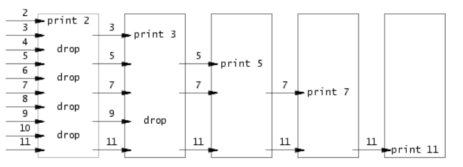

一、引言
进程是操作系统中的重要概念，是对执行一定功能的程序的过程的抽象。这篇文章将简要说明进程的相关知识。介绍进程管理相关的函数，并通过这些函数实现重定向和进程间通信等功能。
二、进程简介
1. 程序执行原理
程序在编译后以二进制方式存在于外存上，执行的时候被操作系统载入内存。以 Linux 系统上的 C 语言编译出来的程序为例，载入的过程简单来说就是把编译完成的 ELF （Executable and Linkable Format 可执行与可链接格式） 文件的几个段的内容读取到内存指定位置，然后初始化寄存器的内容，将指令寄存器（比如cs:ip）指向程序入口，再初始化一些进程相关内容就完成了。
在某一次时钟中断发生的时候，进程主动陷入内核态，进行进程切换的系统调用，CPU 将切换到另一个进程工作。总而言之，整个计算机从开机到关机，就是一个不断创建、切换、终止进程的过程。
2. 进程概念的用途
早期的计算机一次只能执行一个程序，这种程序完全控制系统，并且访问所有系统资源。相比之下，现代计算机系统允许“同时”加载多个应用程序到内存，以便并发（轮流）执行。
这种改进要求对各种程序提供更严的控制和更好的划分。这些需求导致了进程概念的诞生。
进程是现代分时操作系统的工作单元，是操作系统向运行中的程序进行资源分配的单位。进程包括程序代码(文本)，当前活动(程序计数器，寄存器的值)，堆栈，数据端，堆。
需要注意区分程序和进程的概念。程序是被动实体，如存储在磁盘上的可执行文件；进程是活动实体，具有一个程序计数器用于表示下个执行命令和一组相关资源。
当一个可执行文件被加载到内存时，这个程序就成为进程。
两个进程可以与同一程序相关联，但当作两个单独的执行序列，虽然文本段相同，但是数据、堆、堆栈不同。
三. 进程管理
接下来介绍使用操作系统 API 进行进程管理的方法。
1. 使用 fork 创建新进程
#include <unistd.h>
pid_t fork();
fork 无参数，返回一个用于指示子进程的 pid（对于子进程，返回值为 0）。其作用是创建一个子进程，共享父进程所有内容，并且这个子进程会接着 fork 下面的代码继续执行。fork有以下两种用法：
- 一个父进程希望复制自己，使父进程和子进程同时执行不同的代码段。
- 一个进程要执行一个不同的程序。在这种情况下，子进程从
fork返回后立即调用exec。
如果在调用 fork 后子进程先于父进程结束，则子进程就会变为僵尸进程，虽然结束，却依然占据了进程表中的一个位置。为了避免这种情况，需要调用 wait 或 waitpid 来使父进程等待子进程结束，并释放子进程的信息。
#include <sys/wait.h>
pid_t wait(int *status);
pid_t waitpid(pid_t pid,int *status,int options);
下面将以一个程序作为例子。该程序由父进程创建两个子进程，父进程打印字符 B ，两个子进程分别打印 A 和 C ，并且要使最终的输出为 ABC 。
#include <stdio.h>
#include <stdlib.h>
#include <unistd.h>
#include <sys/wait.h>
int main(){
pid_t pid1 = fork();
if (pid1 == 0) // child1
{
printf("A");
}
else // parent
{
wait(NULL);
printf("B");
fflush(stdout);
pid_t pid2 = fork();
if (pid2 == 0) // child2
{
printf("C");
}
else // parent
{
wait(NULL);
}
}
return 0;
}
代码说明： 在该程序中，我们先调用 fork 创建了一个子进程，通过 pid 的数值来区分父子进程。对子进程来说，打印字符 A，对父进程来说，调用 wait 等待子进程结束，随后父进程打印字符 B。（注意这里使用 fflush 刷新了缓冲区，这是因为调用 fork 进行进程复制也会将缓冲区的内容进行复制，没有在此之前刷新缓冲区会导致字符 B 输出两次）接着，类似的，我们根据 pid 判断父子进程，并在子进程中打印字符 C。父进程调用 wait 等待子进程结束，最后退出程序。
2. exec族函数
#include <unistd.h>
int execl(const char *pathname, const char *arg0, ... /* (char *)0 */);
int execv(const char *pathname, char *const argv[]);
int execle(const char *pathname, const char *arg0, .../* (char *)0, char *const envp[] */);
int execve(const char *pathname, char *const argv[], char *const envp[]);
int execlp(const char *filename, const char *arg0, ... /* (char *)0 */);
int execvp(const char *filename, char *const argv[]);
int fexecve(int fd, char *const argv[], char *const envp[]);
// 第一个参数使用的是打开的文件描述符，而非文件路径名
exec 函数族的作用是根据指定的文件名找到可执行文件，并用它来取代调用进程的内容换句话说，就是在调用进程内部执行一个可执行文件。这里的可执行文件既可以是二进制文件，也可以是任何 Linux 下可执行的脚本文件。与一般情况不同，exec 函数族的函数执行成功后不会返回，因为调用进程的实体，包括代码段，数据段和堆栈等都已经被新的内容取代，只留下进程 ID 等一些表面上的信息仍保持原样。只有调用失败了，它们才会返回一个 -1，从原程序的调用点接着往下执行。
这几个函数的用法大体上是一致的，只是参数格式有所不同。
- " l " 代表 list 即列表，对应可变参数
argv以列表的形式出现 - " v " 代表 vector 即矢量数组，对应可变参数
argv以数组的形式出现 - " e " 代表 environment ，对应
envp数组，是指给可执行文件指定环境变量。在全部 7 个函数中，只有execle、execve和fexecve使用了char *envp[]传递环境变量，其它的 4 个函数都没有这个参数，这并不意味着它们不传递环境变量，这 4 个函数将把默认的环境变量不做任何修改地传给被执行的应用程序。而它们用指定的环境变量去替代默认的那些。 - " p " 代表 环境变量 PATH ,字母 p 是指在环境变量 PATH 的目录里去查找要执行的可执行文件。2 个以 p 结尾的函数
execlp和execvp，看起来，和execl与execv的差别很小，事实也如此，它们的区别从第一个参数名可以看出：除execlp和execvp之外的 4 个函数都要求，它们的第 1 个参数 path 必须是一个完整的路径，如"/bin/ls"；而execlp和execvp的第 1 个参数 file 可以仅仅只是一个文件名，如"ls"，这两个函数可以自动到环境变量 PATH 指定的目录里去查找。
注意：
- 当进程调用一种
exec函数时，该进程执行的程序完全替换为新程序，而新程序从其main函数开始执行。- 调用
exec并不创建新进程，前后的进程 ID 并未改变，exec只是用磁盘上的一个新程 序替换了当前进程的正文段、数据段、堆段和栈段。- 在很多 UNIX 实现中，这
7个函数只有execve是内核的系统调用，另外6个只 是库函数，它们最终都要调用该系统调用。
如下的实例程序会对当前目录使用ls -l。
#include <unistd.h>
int main()
{
execlp("ls", "ls", "-l", NULL);
return 0;
}
请注意，使用
execlp及类似函数时，arg0 应为调用的程序名。在可变参数的末尾要加上 NULL
3. dup重定向
#include <unistd.h>
int dup(int oldfd);
int dup2(int oldfd, int newfd);
使用 dup 和 dup2 函数可以复制一个现存的文件描述符。从而实现输入输出的重定向。
dup用来复制参数oldfd所指的文件描述符。当复制成功是，返回最小的尚未被使用过的文件描述符。dup2与dup区别是dup2可以用参数newfd指定新文件描述符的数值。若参数newfd已经被程序使用，则系统就会将newfd所指的文件关闭，若newfd等于oldfd，则返回newfd，而不关闭newfd所指的文件。
如下程序将 printf 的输出内容重定向到 redirect.txt。
#include <stdio.h>
#include <unistd.h>
#include <sys/types.h>
#include <fcntl.h>
int main()
{
int filefd = open("redirect.txt", O_CREAT|O_RDWR, 777);
int redirectfd = dup2(filefd, 1);
printf("hahaha~~");
return 0;
}
4. 管道
#include <unistd.h>
int pipe(int pipefd[2]);
管道是最基本的进程通信机制，可以想象成一个管道，两端分别连着 2 个进程，一个进程往里面写，一个进程从里面读。如果读或写管道的时候没有内容可供读或写，进程将被阻塞，直到有内容可供读写为止。
管道分为匿名管道和命名管道，这里只介绍匿名管的。匿名管道创建后本质上是 2 个文件描述符，父子进程分别持有就能够使用管道，需要注意的是不能够共用匿名管道，也就是除了使用的进程，其他进程需要关闭文件描述符，保证管道 的 2 个描述符分别同时只有 1 个进程持有。
下面是在父子进程间使用管道的例子（父进程写，子进程读）：
#include <unistd.h>
#include <sys/wait.h>
int main()
{
int fd[2];
pipe(fd);
pid_t pid = fork();
if (pid == 0) // child
{
close(fd[1]);
// do something to read with fd[0]
}
else
{
close(fd[0]);
// do something to write with fd[1]
}
return 0;
}
需要注意的是，调用
pipe应该在fork之前。
接下来是一个利用进程实现素数筛的程序
#include <stdio.h>
#include <stdlib.h>
#include <sys/types.h>
#include <unistd.h>
#include <sys/wait.h>
int main(int argc, char* argv[])
{
int numRead[1000];
int readCnt = 0;
int numWrite[1000];
if (argc > 1)
{
int input;
sscanf(argv[1], "%d", &input);
readCnt = input-1;
for (int i = 2; i <= input; i++)
numRead[i-2] = i;
}
pid_t pid;
int fds[2];
do
{
pipe(fds);
pid = fork();
if (pid == 0) // child
{
close(fds[1]);
int fdRead = fds[0];
readCnt = read(fdRead, numRead, sizeof(numRead)) / 4;
if (readCnt == 1 && numRead[0] == -1)
return 0;
}
}while(pid == 0);
close(fds[0]);
int fdWrite = fds[1];
int prime = numRead[0];
printf("%d\n", prime);
fflush(stdout);
int writeCnt = 0;
for (int i = 1; i < readCnt; i++)
{
if (numRead[i] % prime != 0)
numWrite[writeCnt++] = numRead[i];
}
if (writeCnt == 0)
{
fflush(stdout);
numWrite[0] = -1;
write(fdWrite, numWrite, 4);
}
else
write(fdWrite, numWrite, 4 * writeCnt);
wait(NULL);
return 0;
}
原理如下：
Eratosthenes的筛选法可以通过执行以下伪代码来模拟：
p = get a number from left neighbor print p loop: n = get a number from left neighbor if (p does not divide n) send n to right neighbor p = 从左邻居中获取一个数 print p loop: n = 从左邻居中获取一个数 if (n不能被p整除) 将n发送给右邻居生成进程可以将数字2、3、4、…、1000输入管道的左端：行中的第一个进程消除2的倍数，第二个进程消除3的倍数，第三个进程消除5的倍数，依此类推。
